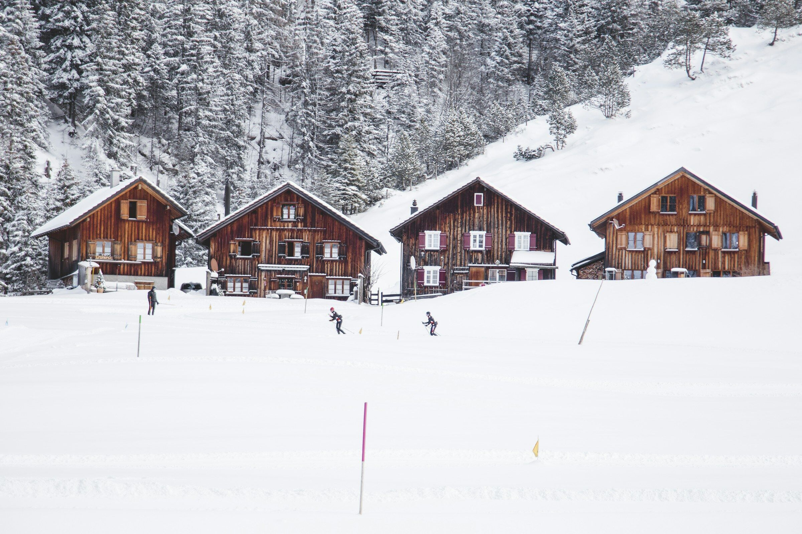

The Best Winter Offsite Destinations in Europe
Where to hold a company retreat in winter: mild-weather escapes in southern Europe and Morocco, snowy mountain lodges and festive cities, with tips on dates.

Winter is an underrated season for company retreats. Venues are more available, prices are lower outside the holidays, and a January kickoff in the sun or a February retreat in the mountains gives everyone a boost in the darkest months.
Mild and sunny
Madeira, Portugal
Spring-like temperatures all year, dramatic coastal walks and a relaxed island pace. Discover Madeira.
The Algarve, Portugal
Quiet, sunny winter days, excellent golf and empty beaches for walks. Many hotels offer strong winter rates. Discover the Algarve.
Taghazout and Marrakech, Morocco
Taghazout stays mild and sunny; Marrakech has bright days and cool evenings. Taghazout · Marrakech.
Seville, Spain
One of Europe's warmest cities in winter, with orange trees in the streets and a great food scene. Discover Seville.
Snow and mountains
Zakopane, Poland
Wooden lodges, ski slopes, sleigh rides and spas at very reasonable prices. Discover Zakopane.
The Alps
Chalets and mountain hotels for skiing, snowshoeing and fondue evenings. Book early, as ski weeks fill fast.

Festive cities in December
Vienna, Prague, Budapest and Kraków
Christmas markets, concerts and grand cafés make December a magical time for an end-of-year retreat or client event. Vienna · Prague · Budapest · Kraków.
Planning tips for winter retreats
- Avoid school holidays in your team's countries, especially February half-term in ski resorts.
- Plan for shorter days. Schedule outdoor activities around midday.
- Build in weather flexibility. Have an indoor alternative for every outdoor activity.
- Check flight schedules. Some routes to the islands run less often in winter.
Ideas for a January sales kickoff
A kickoff in the sun works wonders: a plenary in Lisbon or Seville, breakout sessions, an awards dinner and an outdoor activity on the last day. See our sales kickoff ideas and the kickoff format.
Get proposals
Talk to our expert to receive 3 winter retreat proposals with every participant's flight included, or estimate your budget with our calculator.
Frequently asked questions
Where is warm in Europe in winter for a company retreat?
Madeira, the Canary Islands, the Algarve, Seville and southern Morocco offer the mildest winter weather close to Europe.
Is winter cheaper for company retreats?
Usually yes, outside the Christmas and February holiday weeks. Venues in southern Europe often offer strong rates from November to March.
Can we combine skiing with workshops?
Yes. Many mountain hotels have meeting rooms; a common format is workshops in the morning and skiing in the afternoon.
Let's plan your team's next retreat
Venue, programme, activities and every participant's flight, handled by one team. It starts with a call with our expert.
Keep reading
All articles
Your 2027 Offsite Calendar: When to Go and When to Book
A month-by-month guide to planning company retreats in 2027: the best destinations for each season, peak periods to avoid and when to book.

Poland for Company Retreats: Kraków, Zakopane and Gdańsk
Why Poland is Europe's best-value retreat destination, and how to plan an offsite in Kraków, the Tatra mountains around Zakopane, or Gdańsk on the Baltic.

Portugal for Company Retreats: Lisbon, Algarve, Ericeira, Porto
Why Portugal is Europe's favourite retreat destination, and how to choose between Lisbon, the Algarve, Ericeira, Porto, the Douro, Madeira and the Azores.